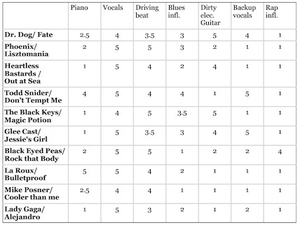

面向程序员的数据挖掘指南 - 3 分类¶
试想一个极端的例子：一个新乐队发布了专辑，这张专辑还没有被任何用户评价或购买过，如果是用协同过滤的话，那它将永远不会出现在推荐列表中。
这时我们可以根据物品特征进行分类。
来看一下潘多拉音乐盒的例子。在这个站点上你可以设立各种音乐频道，只需为这个频道添加一个歌手，潘多拉就会播放和这个歌手风格相类似的歌曲。原因在于潘多拉网站的推荐系统是基于一个名为音乐基因的项目。 他们雇佣了专业的音乐家对歌曲进行分类（提取它们的“基因”）；这些专家要甄别400多种音乐特征。
具体方法是将每种歌曲类型拆分成单独的特征，并对此进行打分。每个特征都是1到5分的尺度，0.5分为一档。1分表示完全不符合，5分则表示很相符。

下表使用一些音乐特征(使用钢琴的程度、使用美声的程度、节奏等)对歌曲进行评分：

可以将上表存成二维HashTable的形式，可以直接利用第一章中的各种距离计算公式计算歌曲之间的距离来进行推荐。按我的理解，可以这么看待问题，或许更加容易理解：把这些特征(piano, vocals, driving beat)看成是用户，各个特征上的评分可以看成是用户评分，把基于用户的协同过滤看成是基于特征的协同过滤。
评分标准¶
假如我想增加一种音乐特征——每分钟的鼓点数（bpm），用来判断这是一首快歌还是慢歌。由于bpm取值范围(100~200左右)与前面(1~5)的不一致，导致bpm基本决定了两首歌的距离。
评分标准不一是所有推荐系统的大敌！让数据变得可用我们可以对其进行标准化(normalization)。
Rescaling/Min-max normalization¶
最常用的方法是将所有数据都转化为0到1之间的值： 将每个值减去最小值，并除以范围：
z-score normalization/Standardization¶
还可以使用标准分(z-score or standard score)：分值偏离均值的程度，
Modified Z-Score¶
标准分的问题在于它会受异常值的影响。 比如说一家公司有100名员工，普通员工每小时赚10美元，而CEO一年能赚600万，那全公司的平均时薪为38美元。在修正的标准分(Modified Z-Score)中，将标准分公式中的均值改为中位数(median)，将标准差改为中位数绝对偏差(average standard deviation, or mean absolute deviation[wiki])。
是否需要标准化？¶
需要进行标准化的情形：
- 我们需要通过物品特性来计算距离；
- 不同特性之间的尺度相差很大。
Python数据格式¶
上面我们用二维HashTable的形式来存储歌曲的特征数据，这样做虽然可行，但却比较繁琐，piano、vocals这样的键名需要重复很多次。我们可以将其简化为向量，即Python中的数组类型：
# 物品向量中的特征依次为：piano, vocals, beat, blues, guitar, backup vocals, rap items = {"Dr Dog/Fate": [2.5, 4, 3.5, 3, 5, 4, 1], "Phoenix/Lisztomania": [2, 5, 5, 3, 2, 1, 1], "Heartless Bastards/Out": [1, 5, 4, 2, 4, 1, 1], "Black Eyed Peas/Rock That Body": [2, 5, 5, 1, 2, 2, 4], "Lady Gaga/Alejandro": [1, 5, 3, 2, 1, 2, 1] }
那么用户“赞”和“踩”的数据用什么表示呢？由于用户并不会对所有的歌曲都做这些操作，所以用嵌套的字典来表示比较方便：
users = {"Angelica": {"Dr Dog/Fate": "L", "Phoenix/Lisztomania": "L", "Mike Posner": "D", "Black Eyed Peas/Rock That Body": "D", "Lady Gaga/Alejandro": "L"}, "Bill": {"Dr Dog/Fate": "L", "Phoenix/Lisztomania": "L", "Heartless Bastards/Out at Sea": "L", "Black Eyed Peas/Rock That Body": "D", "Lady Gaga/Alejandro": "D"}}
这里使用L和D两个字母来表示喜欢和不喜欢。
分类器¶
分类器是指通过物品特征来判断它应该属于哪个组或类别的程序。分类器程序会基于一组已经做过分类的物品进行学习，从而判断新物品的所属类别。
建立一个分类函数，用来预测用户对一个新物品的喜好;这个函数会先计算出与这个物品距离最近的物品，然后找到用户对这个最近物品的评价，以此作为新物品的预测值。
class simple_classifier: def __init__(self, users, items): self.users = users self.items = items def computeNearestNeighbor(self, itemName, itemVector, items): """ 按照距离排序，返回邻近物品列表 :param itemName :param itemVector :param items """ distances = [] for otherItem in items: if otherItem != itemName: distance = DistanceVector.manhattan(itemVector, items[otherItem]) distances.append((distance, otherItem)) # 最近的排在前面 distances.sort() return distances def classify(self, user, itemName, itemVector): nearest = self.computeNearestNeighbor(itemName, itemVector, self.items)[0][1] rating = self.users[user][nearest] return rating
让我们试用一下：
>>> classify('Angelica', 'Chris Cagle/I Breathe In. I Breathe Out', [1, 5, 2.5, 1, 1, 5 , 1]) 'L'
其实我们做的是一个分类器，将歌曲分为了用户喜欢和不喜欢两个类别。
Example: 她是从事什么运动的？¶
先看一个较为简单的例子——根据女运动员的身高和体重来判断她们是从事什么运动项目的。